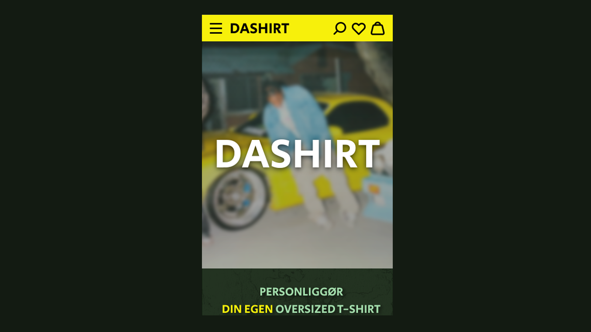
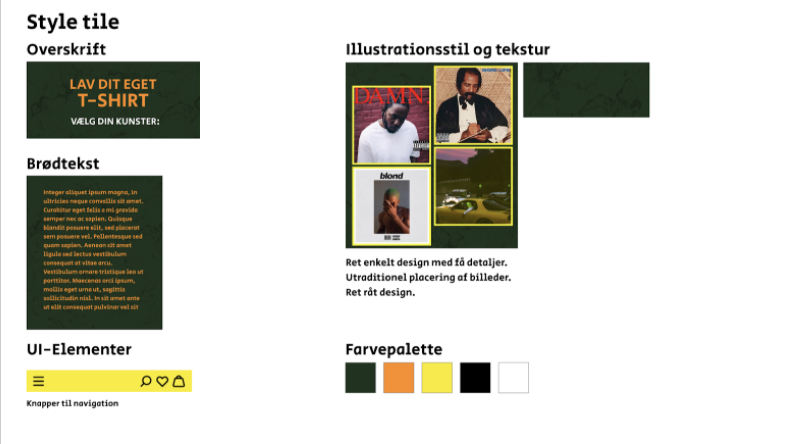
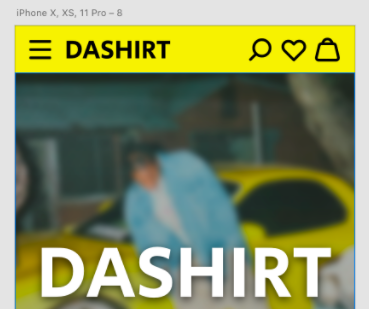
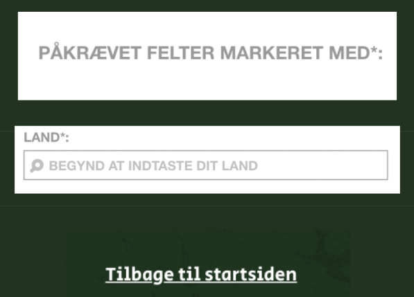
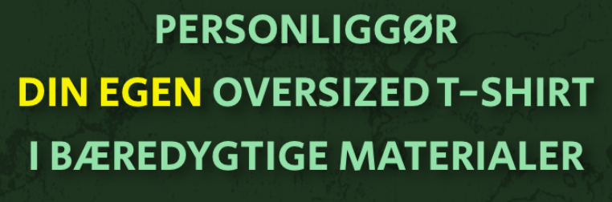

Endelig Prototype

(Du kommer ind på opgaven vet at trykke på billedet ovenover)
Opgave: 03.03.02 Endelig prototype
Værktøjer: Adobe XD
Projekt type: Design / Wireframe / Styletile / UI Kits
I tema 3 blev vi introduceret til Adobe XD Prototype, hvor vi skulle lave en prototype af vores egen hjemmeside. Jeg startede med at designe grundstrukturen og navigationen af selve prototypen, derefter indførte jeg samme visuelle stil som jeg lagde fast i mit styletile.
Da det var på plads, så implementerede jeg copy og microcopy i minløsning for at forbedre brugerens UX.
Da prototypen var tæt på at være færdig, lavede jeg en test af min prototype på tre personer hvor jeg fulgte strukturen for Five Act interview. Testpersonerne forstod selve konceptet og kunne nemt finde rundt i prototypen, men de kom dog med nogle gode løsninger på hvordan man kunne forbedre User-Interface og optimere siden. Det gav anledning til følgende ændringer: Der blev tilføjet et logo i navigationsbaren som førte til home-page, forsiden blev delt op i flere sider, så man ikke skal scrolle så meget, der blev også tilføjet en footer med links til Facebook, Instagram og kontakter. I projektet “04.05.01 Individuelt spil” anvendte jeg samme testmetode til fejlfinding.
Styletile

Copy

Microcopy

Keywords
